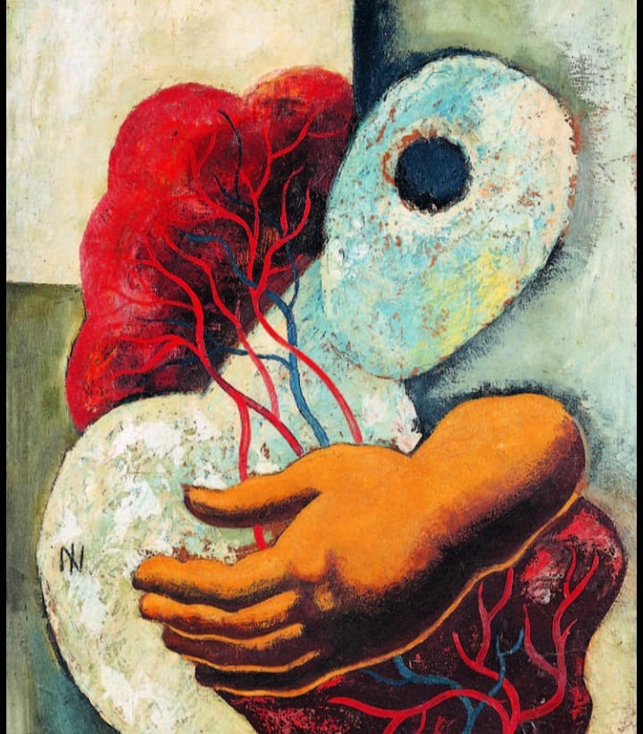

Histórico de Brasil (1920-1930)
Entre 1920 y 1930, Brasil vivió importantes cambios sociales, políticos y culturales. El país estaba dominado por las élites del café, pero las ciudades comenzaron a modernizarse e industrializarse. En 1922 surgió la Semana de Arte Moderna de São Paulo, que buscó romper con el arte tradicional y crear una identidad brasileña.
En 1928 apareció el Movimiento Antropofágico, que mezclaba influencias extranjeras con elementos propios de Brasil. La década terminó con la crisis de 1929, que afectó la economía del país.
Línea de tiempo
Brasil comienza un proceso de modernización y los artistas locales buscan romper decididamente con el arte tradicional de influencia academicista.
Se realiza la célebre Semana de Arte Moderna de São Paulo, evento fundacional que marca formalmente el inicio del Modernismo brasileño.
Se realiza la célebre Semana de Arte Moderna de São Paulo, evento fundacional que marca formalmente el inicio del Modernismo brasileño.
Nace formalmente el Movimiento Antropofágico, impulsado por la emblemática obra pictórica Abaporu de Tarsila do Amaral y la publicación del Manifiesto Antropófago de Oswald de Andrade.
El movimiento modernista de esta década comienza a perder fuerza cohesionada, pero consolida un legado que sigue influyendo de manera permanente en el arte y la literatura del país.
Artistas y referentes
pintora del Movimiento Antropofágico, autora de *Abaporu* (1928)
escritor y creador del Manifiesto Antropófago
pintora que impulsó el arte moderno en Brasil
poeta relacionado con el movimiento
Semana de Arte Moderna
La Semana de Arte Moderna se realizó en el Teatro Municipal de São Paulo entre el 13 y el 17 de febrero de 1922. Es considerada un acontecimiento fundamental para el comienzo del Modernismo brasileño
Antropofagia
En 1928, el Movimiento Antropofágico llevó esta premisa aún más lejos: proponía «devorar» simbólicamente las influencias extranjeras, digerirlas y transformarlas en una expresión artística autónoma,potente y genuinamente brasileña.
Modernismo
Durante el Modernismo brasileño, los artistas buscaron construir una identidad cultural propia, dejando de copiar los modelos europeos. La Semana de Arte Moderna de 1922 impulsó esta búsqueda.La identidad brasileña significaba valorar la diversidad del país, incluyendo sus raíces indígenas, africanas, populares y regionales, y combinarlas con las influencias extranjeras para crear algo nuevo. En 1928, el Movimiento Antropofágico llevó esta idea más lejos: proponía “devorar” simbólicamente las influencias extranjeras, transformarlas y convertirlas en una expresión artística propia de Brasil
Identidad brasileña
Durante el Modernismo brasileño, los artistas buscaron construir una identidad cultural propia, dejando de copiar los modelos europeos. La Semana de Arte Moderna de 1922 impulsó esta búsqueda. La identidad brasileña significaba valorar la diversidad del país, incluyendo sus raíces indígenas, africanas, populares y regionales, y combinarlas con las influencias extranjeras para crear algo nuevo. Entre sus figuras de mayor trascendencia en las artes plásticas se destacaron de manera sobresaliente Tarsila do Amaral, Anita Malfatti y Di Cavalcanti.